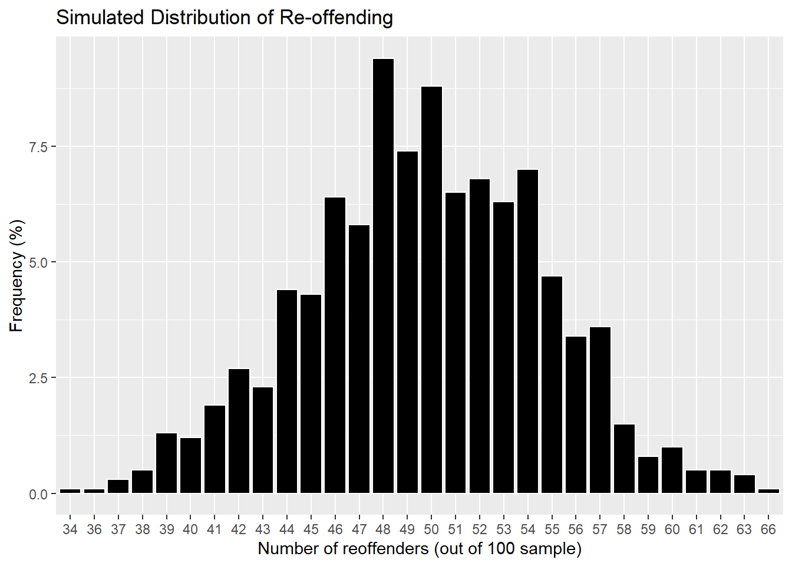
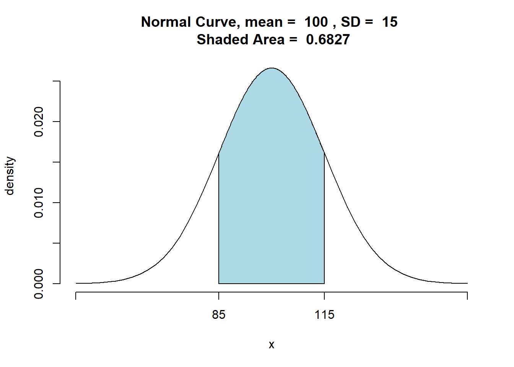

Chapter 6 Hypotheses
Statistical Significance, Binominal Test, Single Sample Significance Tests
Learning Outcomes:
- Know what hypotheses are and how to use them in inferential statistics
- Understand what statistical significance is and how to interpret p-values
- Know what hypothesis tests are and how to conduct a few of them in
Rusing the z and t values
Today’s Learning Tools:
Data:
- Synthetic data
Packages:
DescToolsdplyrggplot2tigerstats
Functions introduced (and packages to which they belong)
BinomCI(): Compute confidence intervals for binomial proportions (DescTools)cat(): Combines/concatenates character values and prints them (base R)nrow(): Counts the number of rows (base R)pnorm(): Probability of random variable following normal distribution (stats)pnormGC(): Compute probabilities for normal random variables (tigerstats)prop.test(): Test null hypothesis that proportions in groups are the same (base R)prop_z_test(): Single-sample z-test for proportions we created in this chapterscale(): Mean centers or rescales a numeric variable (base R)which(): Provides the position of the elements such as in a row (base R)z_test(): Function created in this chapter for a single-sample z-test
6.1 Hypothesis Testing
Last week we were introduced to inferential statistics, where we used a sample of observations, taken from the population, to draw conclusions about this population from which they were drawn. We did this to understand how a sample statistic (such as the sample mean) can be used to make inferences about the population parameters (such as the true mean value in the population).
However, we often use samples not only to draw inferences about sample statistics such as the mean, but to answer research questions. For example, you might want to know, do students experience more burglary than non-students? Do men worry about crime more so than women? Do different ethnic groups have different levels of trust in the police?
In this session, we are going to learn the first step in making predictions about our world: hypothesis testing. In crime and criminal justice research, hypotheses (essentially predictions) are made and tested frequently. Hypotheses suppose (predict) what we will observe in our data. For example, we might think that a new intervention programme will reduce reoffending; or we might think that low self-control is predictive of later criminal behaviour; or we might think that adverts on reporting sexual harassment on public transport will increase awareness and reduce sexual victimisation rates. These are all hypotheses about specific population (offenders who may reoffend, potential offenders who have varying levels of self-control, people who take public transport). However, as we learned last week, we cannot test an entire population. Therefore, instead, when hypothesis testing, we take a sample of this population, and use this sample to draw our inferences.
When we test our hypothesis, we test to see if our prediction is true for the population of interest. For example, let’s say we hypothesize that the new intervention programme will reduce reoffending among at-risk young people in Manchester. There are different study designs to answer this question, for example last semester we learned about randomised control trials. If we take a sample of at-risk young people in Manchester, and randomly assign them to control (no intervention) and treatment (our new intervention programme), we can then compare re-offending (outcome) in these two samples. The way we approach to test this outome is called hypothesis testing as we test the hypothesis that our intervention had an effect. Once we carry out our hypothesis testing (which is what we will learn to do today), and our result shows this, we then can generalise our result to the population of all at-risk young people in Manchester.
Now science (which is what we’re up to at this point!) is funny in that unlike what it sounds like above, we don’t actually set out to prove our intervention works. Instead, what we try to do is try to disprove that our intervention works. It may sound like scientists are a bunch of negative pessimists, but it’s the paradigm of scientific research which we follow. While we don’t have time to get into philosophy of science in this module (shame, I know!) if you are interested, read up on Karl Popper and falsification if this is something you find interesting!
So this is the approach which we follow with hypothesis testing. Instead of showing that our hypothesis is correct, what we want to show is that NOT our hypothesis is NOT correct. How do we do this?
We turn to something called a null hypothesis. The null hypothesis takes our hypothesis and states instead what we expect to see if our hypothesis were not true in the population. Then, when we carry out our hypothesis testing, we aim to reject the null hypothesis.
For example, thinking about questions of relationship between the treatment (new intervention) and outcome (re-offending), while our brains are thinking the hypothesis the intervention reduces re-offending, the null hypothesis which we’ll be testing actually states that there is no relationship between our variables. In this case, our null hypothesis (\(H_0\)) would be that the new intervention programme will not reduce reoffending – and therefore there will be no difference in re-offending rates between those who participated (control) and those who did not participate (treatment) in the programme. To distringuish our hypothesis from our null hypothesis, our hypothesis (\(H_A\)) is considered the alternative (hence the ‘A’) of the null hypothesis. So we test the null hypothesis (of no effect) and we will either reject or fail to reject thus null hypothesis. Going back to our negative science, if we fail to reject our null hypothesis, this means we manage to disprove our alternative hypothesis. If this happened in our intervention, we should stop asking for funding for our programme, because we cannot claim that it works in reducing re-offending.
On the other hand, if we fail to reject our null hypothesis, that is the good news, it seems then that as far as we can tell, there is a relationship between our variables (treatment and outcome), or in other words, a difference between control and treatment groups in re-offending. This means we tried to disprove the relationship, we failed to do so, so we can continue to believe our programme has an effect on re-offending, and we can continue asking for funders to support it in good conscience. Notice that at no point do we say we proved this works as we cannot actually do this. All we can do is fail to disprove. Someone else can come along, and try to disprove this again. This is science. If they get the same results as we do, we can say that our results replicate. If we do not, then our findings come into question. We talkeda about this a little last semester. If you’re interested more, I can recommend the book Science Fictions by Stuart Ritchie.
6.1.0.1 Activity 1: Example Hypotheses
In this first activity let’s look at some hypotheses and then some null hypotheses. We will then construct some of our own.
First, if we consider above our example of re-offending, let’s formalise our hypotheses.
Our alternative hypothesis could be formalised as:
- \(H_A\): There is a difference in re-offending rates between those who participated in the new intervention programme and those who did not participate in said programme.
In contrast, our null hypothesis should therefore say:
- \(H_0\): There is no difference in reoffending rates between those who participated and those who did not participate in the new intervention programme
What about for the question about how low self-control is predictive of later criminal behaviour?
I’ll help again with the alternative hypothesis:
- \(H_A\): There is a relationship between engaging in criminal behaviour and scoring low on assessments of self-control.
Now what do you think the null hypothesis might look like? Think about this in your groups, write your answers in the google docs.
And finally, we considered whether adverts on reporting sexual harassment on public transport will increase awareness. If we wanted to test this, what would our \(H_A\) look like? What about our \(H_0\)?
When we make predictions, we always state both hypotheses: \(H_0\) and \(H_A\). This is how we dormalise what we are carrying out our analysis to find, and it helps guide us to understand what test to use on our sample, and what sort of conclusions we’ll be able to make about our population from them.
6.1.0.2 Activity 2: Directional Hypotheses
When we’re formulating our hypotheses, we can also choose whether the hypothesis is a directional hypothesis or a non-directional hypothesis.
A directional hypothesis is where you specify the direction of the relationship expected and a non-directional hypothesis is where you are only interested in whether there is any difference between groups.
Our example above for re-offending the is a non-directional hypothesis because we do not state specifically whether we want reoffending rates to be lower or higher in each group of young people. Look again at our alternative hypothesis:
- \(H_A\): There is a difference in re-offending rates between those who participated in the new intervention programme and those who did not participate in said programme.
In contrast, our null hypothesis also only refers to a difference between the two groups:
- \(H_0\): There is no difference in reoffending rates between those who participated and those who did not participate in the new intervention programme
In this example, if we see any difference in the two groups, we reject our null hypothesis. In the results above, we said that this is great, because it means our intervention worked, and we can apply for more funding. But we didn’t say anything about the direction of the relationship. We accept there is a difference no matter the direction - even if it means there is actually more re-offending in our treatment group…!
If we want to focus on difference in only one direction, we must choose a directional hypothesis, also known as a one-tailed hypothesis. We will demonstrate how hypothesis testing works below, and it will soon become clear why that is.
For now, just try to think what might be a directional hypothesis way to formalise our \(H_A\) and \(H_0\) for our intervention to reduce re-offending study. Discuss and write in your google docs what you think. We will come back to this later!.
6.2 Today’s 3
To understand hypotheses in action, we learn three substantive concepts today: statistical significance, binominal test, and single sample significance tests.
6.2.1 Statistical Significance
When testing whether there is a relationship between two variables (like our intervention and re-offending) you may hear the term statistical significance. You may have read this in criminology papers, and other reading for your modules. You might read something like:
“There is a statistically significant relationship between the treatment of a new intervention and re-offending rates in young people.”
What is meant by statistical significance? It is a misleading term because it seems to mean that the result is significant or important in some way, but that is not correct. When we test for statistical significance, we are simply testing to see whether we can confidently generalise from our sample to our population. Statistical significance does not tell us about how big any difference in reoffending is between our two groups for example, all it tells us is whether or we are confident that the difference found in our samples can be generalised to the population.
What do I mean by “we are confident”? Confidence is key in hypothesis testing. If we reject the null hypothesis, we want to be confident that it is actually false. In criminology, and across the social sciences, it is common to want to be at least 95% confident in our result (you might recall our 95% confidence intervals from last week…!). While 95% sounds high, keep in mind that this implies that we are willing to be wrong 5% of the time. If our study of re-offending is replicated over and over and over again, we expect about 1 in 20 of the results to reach incorrect conclusions, to be wrong.
So why 95%, why are we willing to accept this error? We cannot be 100% confident because we usually do not have information from the entire population, so find ourselves trying to decide whether our null hypothesis is false without being so sure of the true result in the population. Because of this uncertainty, we need to be wary of Type 1 error. This error, known also as a false positive, is when we reject the null hypothesis when it is actually true. In addition, there is also Type 2 error, a false negative, which is when we fail to reject the null hypothesis even though it is actually false. The image below might help understand these errors:

Figure 6.1 Type 1 and Type 2 errors
So, in testing for statistical significance, we are concerned with rejecting the null hypothesis with high confidence that it is actually false. For this, we will need to identify the risk of making a type 1 error and hope that the risk is as small as possible in a test of statistical significance. How to calculate this risk? We do this by testing to see if the probability of the null hypothesis being true is less than the level of type 1 error specified.
The level specified is called the significance level and is denoted by alpha (α). In the social sciences, it is usually set at α = 0.05 to indicate that we want to be 95% confident in our rejection of the null hypothesis. We then use this value as a cut-off value. If the probability of the null hypothesis is less than α = 0.05, for example, then we can reject it. If, however, the probability is greater than α = 0.05, then we have failed to reject the null hypothesis.
The probability obtained is the p-value, short for probability value, and it tells us how likely we are to observe that certain result or effect which we found in our sample, if the null hypothesis were to be true.
The terminology is important here: we can only say we ‘reject’ or ‘fail to reject’ the null hypothesis; we cannot say we ‘accept’ the null hypothesis because testing for statistical significance is not about finding out if the null hypothesis is correct.
So let’s say for our study of the two groups of at-risk young people we find that in our 1-year follow-up, we find that in the treatment group, 10 out of the 50 young people went on to reoffend whereas, in the control group, 28 out of the 50 went on to reoffend. Remember - this is what we see in our sample. When we carry out our hypothesis testing, we will look for whether this difference is statistically significant, that is, the probability to observe this difference between two samples in the event that our null hypothesis (that our intervention has no effect) is true. If we find this probability to be small (less than our cut-off value of \(\alpha = 0.05\)), we reject the null hypothesis. If we find the probability to be larger than our cut-off value of \(\alpha = 0.05\), then we fail to reject our null hypothesis.
So how can we calculate this value? We do this in the next section.
6.2.2 A Binomial Test
Now that we have established what is statistical significance, we must identify the most appropriate test for statistical significance. Selecting an appropriate test depends on a number of assumptions. The remainder of the course unit will introduce you to a number of these tests. For today, we learn about specific hypothesis tests using the binomial distribution and then the normal distribution, and each have their own set of assumptions. We illustrate hypothesis testing using the binomial distribution.
6.2.2.1 Activity 3: Distributions
In the previous week we spoke a lot about the normal distribution. We also mentioned that the sampling distribution of your sample statistic (eg mean) will always follow a normal distribution, even if your data follow different distributions. And your data often will! For example, count data often follows a Poisson distribution. And here, in the case of our re-offending of young people study, we are looking at a Binomial distribution. Binary variables (when there are only two outcomes, which are mutually exclusive - remember the illustrations where the animals were either extinct or not) may follow a Binomial distribution. We can code binary data as 0s and 1s, where 1s are our event (sometimes called successes) and 0s are when you don’t observe the event (sometimes called failures).
In the case of our data on re-offending, we could consider re-offending an event (1) while not having re-offended at the 1-year follow up the absence of this event (0). You can see why we don’t always want to call the event the “success”, you might get funny looks if you say that the young people re-offending is a success…!
So in any case, let’s get some fake data up again for our young people. We use the data.frame() function to build a data frame. We will give each young person an id of 1 to 100 (it’s an anonymous study), and then we will assign 50 to treatment and 50 to control (I say assign, here we are making the data up!!!) and then we assign values for the binary varaible of whether they had re-offended or not by the time of our 1-year follow-up.
young_people <- data.frame(
id = c(1:100),
group = c(rep("treatment", 50), rep("control", 50)),
reoffended = c(rep(1, 10), rep(0, 40), rep(1, 28), rep(0, 22))
)Let’s see the distribution of our outcome variable, re-offending:
library(ggplot2)
ggplot(young_people, aes(x = reoffended)) +
geom_histogram(bins = 2, fill = "black", col = "white") +
theme_minimal() +
scale_x_continuous(breaks = c(0,1)) +
labs(title = "Re-offending at 1-year follow up")We can see that overall there is quite a high count of re-offending in our follow-up.
But what we are interested in is probability to have see the number of successes (re-offences) in our outcome. What does this look like for our binomial distribution? Remember that we are looking at a probability distribution, which tells us what is the probability that we get a certain number of young people reoffending? We have 100 young people, what is the probability of having \(k\) number of them re-offend? (i.e. \(P(X=k)\)). For our binomial distribution, we calculate the probability of observing \(k\) young people who re-offended for each possible \(k\). So for example, we want to calculate what is the probability that exactly one young person re-offended. Then that exactly two young people re-offended. Then that exactly three young people re-offended. And so on…!
So what is the probability for each one of these outcomes? We use the equation below to calculate this:
\(Binomial(n,k,p) = C(n,k) * p^k * (1-p)^{n-k}\)
Where \(C(n,k)\) refers to all the possible combinations in which you can have \(k\) people re-offend in our sample of \(n\). So for example for the probability that 38 people re-offended out of our sample of 100, we calculate this \(C(n,k) = {n!}/{(n-k)!}\) as \(C(100,38) = {100!}/{100!*(100-38)!}\). ! means factorial, which in R you can caluclate with the factorial() function.
So
factorial(100)/factorial(100-38)## [1] 2.965564e+72You can see there are many many different ways in which we can choose 38 re-offenders.
The last thing left to plug into the equation is p, which is the probability of an outcome. Assuming that the re-offending is as likely an outcome as not re-offending, this value is 0.5 (as there are only two possible outcomes!).
So binging it all together, the probability that we get exactly one re-offence in our data is:
(factorial(100)/(factorial(100)*factorial(100-38)))*( 0.5^38) * ((1-0.5)^(100-38))## [1] 2.50671e-116Now we can use some pseudo-random numbers to simulate what our binomial probability distribution will look like. I use simulation of 1000 replications of this study, with sample sizes of 100 young people each, something like we did last week, but I won’t cover how to do this, as it’s not important for you here, but I’ll show you the output anyway:
##
## Attaching package: 'dplyr'## The following objects are masked from 'package:stats':
##
## filter, lag## The following objects are masked from 'package:base':
##
## intersect, setdiff, setequal, union
You can see that if generally in the population without any treatment we assume it’s about 50/50 whether a young person re-offends, these are the sort of re-offending outcomes we can expect to observe. We can see our sample overall (both ground together) are on the left tail of this distribution. Let’s move on now to how we can use this for hypothesis testing.
6.2.2.2 Activity 4: Making Assumptions
All the ways in which we will be learning hypothesis testing rely on certain assumptions about your data. If these assumptions are violated, then the tests may not be as effective as we’d like, and can even result in erroneous conclusions. Therefore it is very important to consider the assumptions, and address whether these are met or violated by our data.
Hypothesis testing using the binomial distribution have the following assumptions:
Level of measurement: the variable is binary, meaning it measures only two possible categories.
Shape of the population distribution: None
Sample: high external validity
Hypothesis: stated before collection and analysis of data
How can we check that these assumptions are met?
- Well the first one asks about the level of measurement of our outcome variable. Since that is a binary variable (for each young person, we know whether they re-offended (1) or not (0)), this assumption is met.
- The second assumption, about the shape of the distribution, the test makes no assumptions. Therefore there is nothing to check!
- The third question asks about our sample. Are they likely to be representative of the population? This is usually best assessed by looking at the sampling strategy - e.g. are they selected using some random (probability) sampling technique? While here we are creating fake data, in real-world studies you will hear about the sampling, and how it ensures this validity.
- Finally the fourth question asks us whether we stated our hypothesis before collecting our data. In this case, we did, we formalised our \(H_A\) and \(H_0\) before collecting our data.
6.2.2.3 Activity 5: Statistical significance with proportions test
Now that we have addressed the assumptions, let’s look at our data again. The sample comprises 100 at-risk young people who are randomly assigned to two groups: 50 to a treatment group that receives the intervention that aims to prevent them from committing future offences and 50 to the control group that receives no intervention. We evaluate this programme to see if it works and if it can be generalised to all at-risk youth in Manchester, by checking in 1 year on as a follow-up, to see whether the young people re-offended at different proportions in the two groups. As the outcome has only two options – success and failure – we rely on the binomial distribution.
In R, we run the prop.test() function to test the null hypothesis that the proportions, or probabilities of success, are the same or equal in several groups.
Let’s look at the differences in re-offending between the two groups We can use the facet_wrap() function in ggplot2 to look at the two groups side by side:
ggplot(young_people, aes(x = reoffended)) +
geom_histogram(bins = 2, fill = "black", col = "white") +
theme_minimal() +
scale_x_continuous(breaks = c(0,1)) +
labs(title = "Re-offending at 1-year follow up") +
facet_wrap(~group)
Wow we see very different proportions in the two groups!
Let’s look at the number of people who re-offended in each group.
young_people %>% group_by(group, reoffended) %>% count()## # A tibble: 4 x 3
## # Groups: group, reoffended [4]
## group reoffended n
## <chr> <dbl> <int>
## 1 control 0 22
## 2 control 1 28
## 3 treatment 0 40
## 4 treatment 1 10We find that in the treatment group, 10 out of the 50 went on to reoffend whereas, in the control group, 28 out of the 50 went on to reoffend.
We could stop here and conclude, ‘Yes, there is a difference between groups, and by golly, the intervention works.’ But remember that chance, or random variation, is inherent in all phenomena, so this observation could just be a mere fluke. That is why we conduct a test of statistical significance. This one is called a ‘two-sample proportion test’. So like mentioned we use the prop.test() function, and we need to give two pairs of values, x and n. For the x value, we need to specify the number of successes (1s) in each group. We have 10 successes (number of young people who have re-offended…. you can see why “success” is an awkward word to use for many criminology research…!) in the treatment group, and 28 in the control. So here we put them together as c(10, 28). The second value pair, n, refers to the sample sizes of each group. Here we had the same number (50) in each group so the value is c(50,50). Bring it together like so:
# The first concatenate (c () ) contains the numbers that went onto reoffend
# The second concatenate contains the total numbers in each group
prop.test(x = c(10, 28), n = c(50, 50))##
## 2-sample test for equality of proportions with continuity correction
##
## data: c(10, 28) out of c(50, 50)
## X-squared = 12.267, df = 1, p-value = 0.0004611
## alternative hypothesis: two.sided
## 95 percent confidence interval:
## -0.5567014 -0.1632986
## sample estimates:
## prop 1 prop 2
## 0.20 0.56The output is a little ugly, but you can refer to the help documentation for more detail on the output by typing ?prop.test.
You can see there are some points of interest in there for us. We can extract them individually by saving the results into a new object. Let’s call this reoff_results:
reoff_results <- prop.test(x = c(10, 28), n = c(50, 50))Then we can extract this from our new object reoff_results the same way we refer to variables in dataframes, by using the $ operator.
Let us focus on interpreting these results:
- P-value: probability of observing this difference in proportions given the null hypothesis is true. To extract this value we need
$p.valueand then check – is it less than α = 0.05 ?
reoff_results$p.value## [1] 0.0004611492- Alternative hypothesis: although we should specify the direction of the hypothesis before even collecting our data, R reminds us of our choices here. Since let’s say initially we expect between-group differences in either direction so it is non-directional or two-sided.
reoff_results$alternative## [1] "two.sided"- The estimate: this gives you the proportion of successess attributed to each group – 20% in one group (10/ 50) (prop1) and 56% in the other (28/ 50) (prop2)
reoff_results$estimate## prop 1 prop 2
## 0.20 0.56So how do you interpret these numbers?
The p-value is less than the specified \(\alpha\) = 0.05, so we can reject our null hypothesis of no difference say that the difference in re-offending between the two groups is statistically significant. We have evidence to reject the null hypothesis that no difference in re-offending exists between the treatment and control groups. This suggests that something is happening because of the intervention, but we are not sure what. We could now turn to look at the proportions in each group, and state that we can see fewer proportion of young people who went through the treatment re-offended than those in the control, who did not receive the treatment. But what if we wanted
6.2.2.4 Activity 6: Directional tests
Now, what about if we want a directional hypothesis? For example, we expect that re-offending reduces in the treatment group compared to the control group. In this case, we think that the treatment group will have less re-offending, and this becomes our \(H_A\) which we are testing. As our hypothesis has changed, the test we use has changed. Remember the assumptions of our test, that we have specified our hypotheses in advance? This is why this is important! In reality we will only run one hypothesis test. Here we just demonstrate multiple for you to learn!
Okay, so how to test for a one-tailed (one-sided) directional hypothesis? Well we can specify within the prop.test() function what we want our aternative hypothesis to be.
By default, prop.test() function will preform a “two.sided” test (non-directional hypothesis). This is why we did not have to specify this parameter above (although we were reminded with the $alternative output of our results!). To specify, we can choose which way we think the direction will go. We can choose “less” or “greater” depending on whether we think that re-offending in our treatment group will be less than in the control, or greater than in the control. Ideally, we want our treatment to reduce re-offending, not increase it (although remember the scared straight interventions we discussed last semester??), so we will choose “less” here:
# We add ‘alternative=’ and specify ‘less’ to indicate we expect the treatment group to have a smaller probability of reoffending than the control
reoff_directional_results <- prop.test(x = c(10, 28), n = c(50, 50), alternative = "less")So what are the results now? Well first let’s check the \(H_A\) we just tested with the test we just performed:
reoff_directional_results$alternative## [1] "less"We see the \(H_A\) we tested is that the treatment group has re-offended (succeeded??) less than the control group.
Great! Does this change our conclusions?
reoff_directional_results$p.value## [1] 0.0002305746Doesn’t seem so. Again, the p-value is less than \(\alpha\) = 0.05, so we have sufficient indication to reject our null hypothesis. In other words, there is evidence to suggest that the at-risk youth in the treatment did offend less than in the control group due to the intervention, and this finding is statistically significant – we can generalise this result to the population which they represent.
Now if, for example, we found out that the therapist hired to deliver the intervention was a fraud, we may be worried the treatment group did worse than the control group. We then would expect a directional hypothesis where reoffending is higher in the treatment group than that of the control. We run the two-sample proportion test again, but with a slight difference to the direction:
# We specify ‘greater’ following ‘alternative’ to indicate our expected direction for the treatment group relative to the control group
reoff_greater_results<- prop.test(x = c(10, 28), n = c(50, 50), alternative = "greater")Let’s check the p-value
reoff_greater_results$p.value## [1] 0.9997694The p-value is greater than the specified 0.05, meaning that we have failed to reject the null hypothesis, and we do not have adequate evidence to support our hypothesis that our intervention increases re-offending.
NOTE:: With this example, we have committed some bad practice: we did multiple hypothesis tests. This is a no-no: stick to one hypothesis and test that. Our purpose here, however, was to demonstrate how to run the binomial test. Recall that it is important to state your hypotheses before you collect and analyse your data.
6.2.2.5 Activity 7: Confidence Intervals
Last week we introduced Confidence Intervals. Including confidence intervals (CIs) is good practice, and it is possible to create them for binomial proportions. For example, we would like to build CIs around the proportion of the outcome for each group. We use the BinomCI () function in the DescTools package to do so. We specify 3 parameters, (1) the number of successes (re-offenders), the sample size (50 for each group), and the confidence level (let’s stick with 95%):
First for the treatment group:
library(DescTools)
# CIs for treatment group where 10 reoffended
BinomCI(10, 50, conf.level = 0.95)## est lwr.ci upr.ci
## [1,] 0.2 0.1124375 0.3303711Then for the treatment:
# CIs for control group where 28 reoffended
BinomCI(28, 50, conf.level = 0.95)## est lwr.ci upr.ci
## [1,] 0.56 0.4230603 0.688378In the CI for the treatment group, 11 to 33% of young people exposed to the intervention will reoffend, whereas the CI for the control group indicates that 42 to 69% of the young people not exposed to the intervention will reoffend. This seems like a large difference. To get a better understanding, we visualise this using ggplot:
# Taking the previous coding and placing them in objects
treatment_group <- BinomCI(10, 50, conf.level = 0.95)
control_group <- BinomCI(28, 50, conf.level = 0.95)
# Creating two error bar layers, one for each group
ggplot() +
geom_errorbar(mapping = aes(ymin = treatment_group[2], ymax = treatment_group[3], x = "treatment", colour = "treatment")) +
geom_point(mapping = aes(y = treatment_group[1], x = "treatment", colour = "treatment")) + geom_errorbar(mapping = aes(ymin = control_group[2], ymax = control_group[3], x = "control", colour = "control")) +
geom_point(mapping = aes(y = control_group[1], x = "control", colour = "control")) +
xlab("Group") +
ylab("Proportion who reoffended at follow-up") +
theme_minimal()
Visualising our results, we see further support that the intervention reduces reoffending: the confidence intervals for each group do not overlap and the proportion for the control group is lower than that of the treatment group. When the CIs between groups do not overlap, this is good because it indicates that the two groups likely come from two different populations.
6.2.3 Single-sample significance tests
For this section, we learn some hypothesis tests that use the normal distribution.
Remember we’re starting with our assumptions. Hypothesis testing using the normal distribution have the following assumptions:
Level of measurement: the variable is interval or ratio level
Shape of the population distribution: normal distribution
Sample: high external validity
Hypothesis: stated before collection and analysis of data
Unlike the binominal test, which compared groups, we will be comparing a single group – our sample – to the population. This may sound strange because we have learned that information about the population is rare, so we must make do with uncertainty. In some cases, however, we may know the population parameter and these tests can be used. When comparing our sample to a known population, we use the z- distribution; if we have to compare with an unknown population, we use the t-distribution. The z- and t- distributions are types of normal distributions.
The normal distribution has some predictable characteristics about it. One is that half of the distribution will always be below the mean, and the other half will be above the mean. We demonstrate this by creating a synthetic data of 1.5 million US prisoner IQ scores, drawn from a population that is normally distributed (\(\mu\) = 100; SD = 15). We then test whether half of our population have an IQ above the mean. We introduce two new functions: which() to select a subset of prisoners who have an IQ of 100 + and nrow(), which divides the number of prisoners with an IQ of 100+ by the total number of prisoners:
# Make synthetic data which includes the variables ‘prisoner_id’ and ‘IQ’
# ‘prisoner_id’ has 1 to 1.5 million IDs while ‘IQ’ has scores generated by ‘rnorm’ function
# Place data frame in object called ‘prisoner_iq’
prisoner_iq <- data.frame( prisoner_id = 1:1500000, IQ = round(rnorm(1500000, mean = 100, sd = 15), 0))
# Using ‘which’ function to make subset of prisoners with IQ above 100
# ‘which’ is to the left of the ‘,’ at the end of code to specify that we are selecting rows
# Place subset in object called ‘iq_over_100’
iq_over_100 <- prisoner_iq %>% filter(IQ > 100)
# Divide ‘iq_over_100’ by total number of prisoner IQ scores
nrow(iq_over_100)/nrow(prisoner_iq)## [1] 0.4867987The result should be close to .50 indicating that half of the population will have an IQ higher than the mean. This illustrates a useful feature of the normal distribution: the percentage of cases between its mean and points at a measured distance are fixed. This is referred to as the standard deviation (SD) unit, and the z-score is used to represent it. Z-scores range from -4 standard deviations below the mean and +4 standard deviations above the mean.
6.2.3.1 Activity 8: Calculating a z-score
This should all be sounding a bit familiar now. All the z-score does is express in standard deviations, how far away a particular observed value lies from the mean. The z score of any observed value can be calculated by subtracting the mean from the observation, and dividing by the standard deviation. Simply:
\(z = \frac{x - \mu}{\sigma}\)
However, since R is nice to us, we can make it even simpler to create z-scores, we can use the function scale(). For the next example, we take the IQ of five prisoners and change the IQ of the first prisoner from 102 to 115 so that it is easy to show that this prisoner’s z-score is 1. The reason is the prisoner’s IQ score of 115 is one standard deviation above the population mean. (Remember: \(\mu\) = 100; SD = 15):
# View the first 5 prisoner IQs
prisoner_iq[1:5,] ## prisoner_id IQ
## 1 1 98
## 2 2 108
## 3 3 109
## 4 4 111
## 5 5 97# Change the IQ of prisoner #1
prisoner_iq$IQ[1] <- 115
# Create a variable storing z-scores of IQs
prisoner_iq$z_scoreIQ <- scale(prisoner_iq$IQ)
# Check to make sure prisoner #1 has a z-score around 1
prisoner_iq[1,]## prisoner_id IQ z_scoreIQ
## 1 1 115 0.9994118To show that this is the same z-score you would get with the formula above, go ahead and calculate \(z = \frac{x - \mu}{\sigma}\):
(115 - mean(prisoner_iq$IQ))/sd(prisoner_iq$IQ)## [1] 0.9994118Same value!
Where the z-score becomes practical is illustrated in the following example: say if a probation officer is writing a report for a prisoner who is about to be up for parole. The prisoner has an IQ of 124. The officer wants to give a good idea of how this score compares to all other prisoners. An apt way of doing this is to state the proportion of prisoners who have lower IQs. This can be done using the pnormGC() function from the tigerstats package:
library(tigerstats)# The mean should be 100 but, in reality, it is not precise, so we calculate it and put in the #object ‘iq_m’
iq_m<-mean(prisoner_iq$IQ)
# Same with sd; it should be 15 but we calculate it to get a precise estimate and put in object #‘iq_sd’
iq_sd<-sd(prisoner_iq$IQ)
# Enter the prisoner’s IQ score and specify ‘below’ following ‘region’ because we are
# interested in IQ scores below 124
pnormGC(124, region="below", mean=iq_m, sd=iq_sd,graph=TRUE) 
## [1] 0.945133The output shows the shaded area at 0.9453, meaning that the prisoner has a higher IQ than over 94% of the prison population.
Recall from the previous week, the 68-95-99.7 rule. This is helpful to keep in mind with z-scores, as a z-score indicates how far away a score is from the mean based on the standard normal distribution. The rule posits that 68% of cases in the distribution fall within one standard deviation above and below the mean; 95% within two SD; and 99.7% within 3 SD. We demonstrate this rule by using the pnormGC() function to get the proportion of prisoners that have an IQ between 85 to 115, which is one SD above and below the mean:
# Specify ‘between’ for ‘region’ because we are interested in proportion of prisoners between the two given values
pnormGC(bound=c(85, 115),region="between", mean=100,sd=15,graph=TRUE)
## [1] 0.6826895And, yes, it shows that 68% of the IQ scores do fall within 1 SD of the mean.
6.2.3.2 Activity 9: Single sample z-tests for means
Returning to the parole board example, say if the officer wanted to know, with 99% confidence, if the average IQ at this specific prison is significantly different from those of all prisons in the UK. The officer conducts an IQ assessment of all 233 prisoners at their prison and finds average IQ is 103 (SD =18). As the population parameter is known on prisoner IQ, a single sample z-test is appropriate. This test examines whether a sample is drawn from a specific population with a known or hypothesized mean. Here are the officer’s hypotheses:
\(H_0\): The mean IQ of the population from which our sample of prisoners was drawn is the same as the mean IQ of the UK prison population (mean = 100).
\(H_A\): The mean IQ of the population from which our sample of prisoners was drawn is not the same as the mean IQ of the UK prison population (mean ≠ 100).
We create our own function called ’ z_test ’ so that other prisons can easily compare their IQ scores to that of all prisoners. In addition, we use cat(), which combines our string text to label our z-score in the output and the computed z-score together.
# Specifying inputs in the order that the user needs to enter them : mean, standard deviation,number of prisons, and the population mean that the sample mean to which it will be compared
z_test<-function(xbar, sd, n, mu) {
z <- (xbar-mu) / (sd / sqrt(n)) # Equation for one-sample z-test
return(cat('z =', z)) # Report z-score to the user
} # End function
# Test it with our example by supplying estimates
z_test(103, 18, 233, 100)## z = 2.544056Including the p-value would be helpful so we edit our code and use the function pnorm() to compute the probability value.
# Same as above
z_test<-function(xbar, sd, n, mu) {
z <- (xbar-mu) / (sd / sqrt(n))
# This is the new bit: we multiply ‘pnorm’ by 2 to indicate that our hypothesis is non-directional
p<-2 * pnorm(-abs(z))
return( cat('z =', z,
'\np-value =', p)) # Added code to return p-value
}
# Test it with our example again
z_test(103, 18, 233, 100)## z = 2.544056
## p-value = 0.01095734Remember that the officer wanted to be 99% confident, and this means that the significance level would be set at α = 0.01 and not α = 0.05 (this is if we are 95% confident). As so, our p-value is greater than the alpha level so we fail to reject the null hypothesis.
6.2.3.3 Activity 10: Single Sample z-tests for Proportions
Our next example is to do with evaluating a new prison education programme. The foundation supporting the programme would like to achieve a success rate of 75% among 100,000 prisoners participating in he programme. Success is defined as completion of the six-month course.
After the programme ran, there is conflicting information about its success: managers of the programme claim they achieved higher than the 75% success rate, while a journalist investigating the programme claimed it was below 75%. You want to get to the bottom of this, so you collect information from 150 of the prisoners who enrolled on the programme using independent random sampling.
Your data shows that 85% of the participants successfully completed the programme. What to make of your result? Let’s set up the hypotheses where we want a non-directional alternative hypothesis:
\(H_0\): The success rate of the program is 0.75% (P = 0.75).
\(H_A\): The success rate of the program is not 0.75% (P ≠ 0.75)
To test this, we use a single-sample z-test for proportions because we are concerned with comparing the percentages or proportions between our sample and the known population. We create another new function:
# Specifying inputs: p is proportion of success, P is proportion of success in population, n is sample size
prop_z_test<-function(p, P, n) {
Numerator<-(p - P)
PQ<- P * (1-P)
# Standard error
Denominator<-sqrt(PQ / n)
z<- Numerator / Denominator
# Return the z-value and p-value to the user
p<-2 * pnorm(-abs(z))
return( cat('z =', z,
'\np-value =', p))
}
# Let's test it using the values from our problem
prop_z_test(0.85, 0.75, 150)## z = 2.828427
## p-value = 0.004677735The z-score is 2.828427 and the p-value is statistically significant. We reject the null hypothesis and conclude that the success rate is not 75%.
6.2.3.4 Activity 11: Single-sample t-tests for Means
When the population parameter is unknown and we want to compare our sample to it, we use the t-distribution. From the previous example, let us say that average test scores were also collected for those prisoners who completed the six-month education course.
The foundation defined success as 65 for the test. Again, managers claimed the average scores were higher than this, whereas the journalist claimed the average was below 65. You have collected test score information from 50 prisoners and find that the mean is 60 and SD is 15. What conclusions can be made about the larger population of prisoners at the 95% confidence level?
Hypotheses
\(H_0\): The mean test score for prisoners who have completed the program is 65 (μ = 65).
\(H_A\): The mean test score for prisoners who have completed the program is not 65 (μ ≠ 65).
We conduct a single-sample t-test for means, which is similar to the previous z-tests except it is for an unknown population, which in this case, is the overall population of prisoners and not just the ones who had completed the six-month education programme. We modify the code from the z_test () function:
# Specifying inputs: xbar is sample mean, sd is sample standard deviation, n is sample size, mu is defined by null hypothesis and is 65
single_t_test<-function(xbar, sd, n, mu) {
# Equation for one-sample z-test
t <- (xbar-mu) / (sd / sqrt(n - 1))
# Report t-score and p-value to the user
p<-2 * pnorm(-abs(t))
return( cat('t =', t,
'\np-value =', p))
}
# Test it with our example
single_t_test(60, 15, 51, 65)## t = -2.357023
## p-value = 0.01842213The t-value of -2.357023 is statistically significant, so we have sufficient support to reject the null hypothesis. We conclude that the mean test score for prisoners who completed the programme is not 65.
6.3 SUMMARY
Today, we learned that to make predictions about the population from our sample, we must create hypotheses. When we test our hypothesis, we aspire to reject the null hypothesis, which tells us no differences exist. To ensure we reject the null accurately, however, we must be wary of type 1 error so we consider this error in tests of statistical significance and in evaluating our p-values. These hypothesis tests we learned today in R used the binomial distribution as well as the normal distribution, and required us to set our hypotheses at the outset as either directional or non-directional. Hypothesis tests that used the normal distribution were for single samples and statistical significance was determined by z scores and t values.
Homework time…